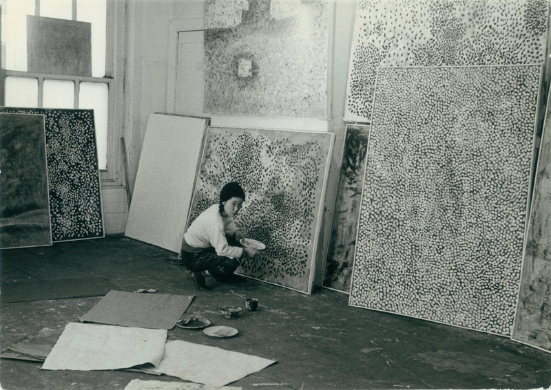
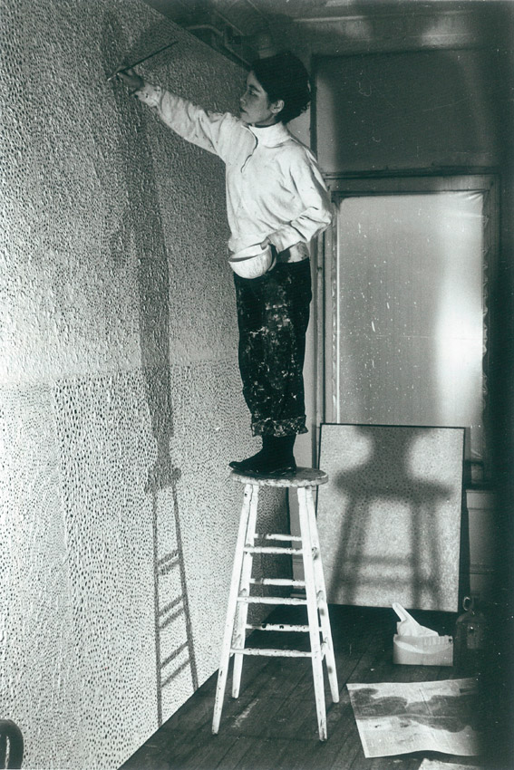
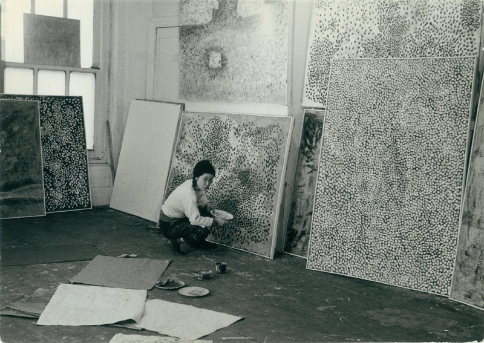
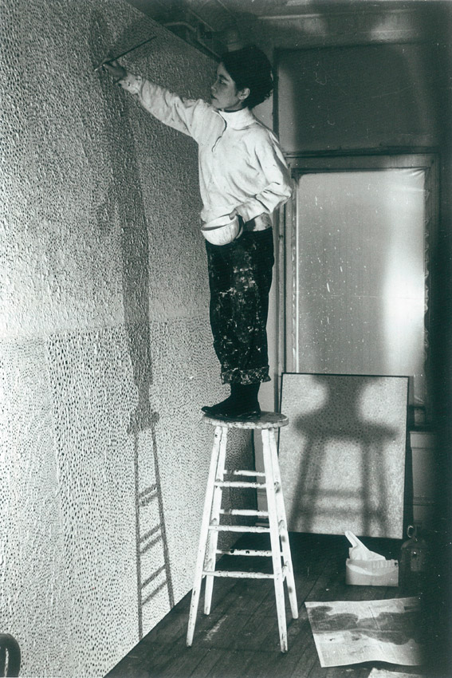

Yayoi Kusama’s life experiences were not exactly pleasant. Born into an affluent family in Japan, her mother was unsupportive of her art and was physically abusive. Kusama’s father was involved in extramarital affairs, which led to her lifelong contempt for sexuality. During World War II, she was sent to a military factory producing parachutes as a teenager “in closed darkness.” After living in Tokyo and France for a period, then moved to the United States at 27 years old.
The artist’s mental illness is simultaneously a source of inspiration and frustration–Kusama was hospitalized many times and even attempted suicide in the 1960s-70s. Later, she returned to Japan and voluntarily checked herself into Seiwa Hospital for the Mentally Ill. She permanently resides there, and makes her work in a nearby studio. For her, art has become a creative escape.
 


